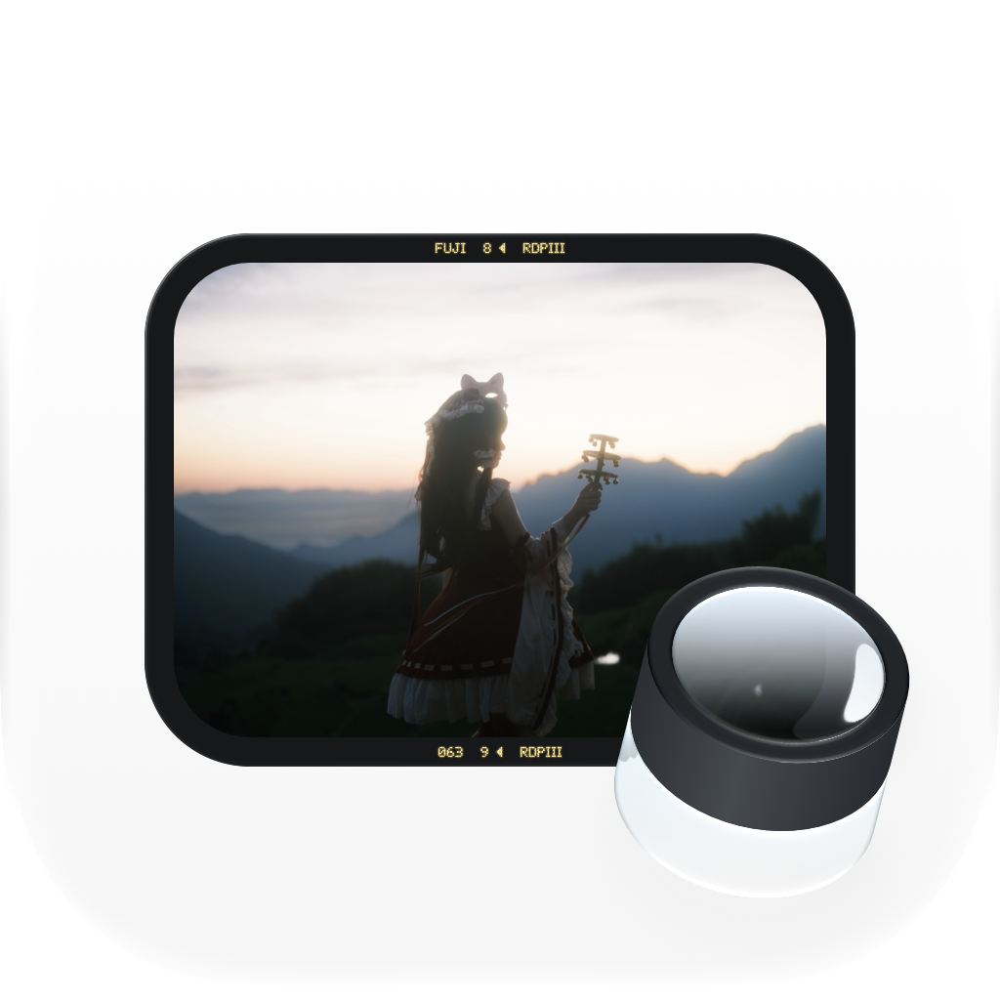

Contact Sheet 支持
适用于 macOS 14 或更新版本。
打开照片
连接存储卡或外置硬盘后，在侧栏选择对应设备。要浏览本机文件夹，点击“本地目录”旁的添加按钮，或使用“Contact Sheet → 选择文件夹”。
整理与拷卡
使用工具栏中的分组模式，按时间间隔或指定组数整理照片，也可以手工调整分界。进入分组查看照片并设置星级，再通过拷卡操作选择目标位置。等待任务完成并确认校验状态后，再断开设备。
文件夹无法访问
确认存储设备已连接，并通过应用重新选择需要访问的文件夹。如果 macOS 请求文件夹权限，请允许访问。选择拷卡目标时，请确认该位置可写且有足够可用空间。
照片没有显示
确认所选目录包含 JPEG、HEIF、受支持 RAW 或视频文件，然后刷新设备。RAW 预览能力取决于文件格式及 macOS 的支持情况。
切换外观
在“设置 → 外观”中选择浅色、深色或跟随系统，并切换原生或复古信息栏。
联系支持
如需帮助或有功能建议，请发送邮件至 anloetic@foxmail.com。
反馈问题时，请提供应用版本、macOS 版本、操作步骤和错误提示。截图中请遮挡私人信息；无需提供原始照片、密码或完整文件路径。